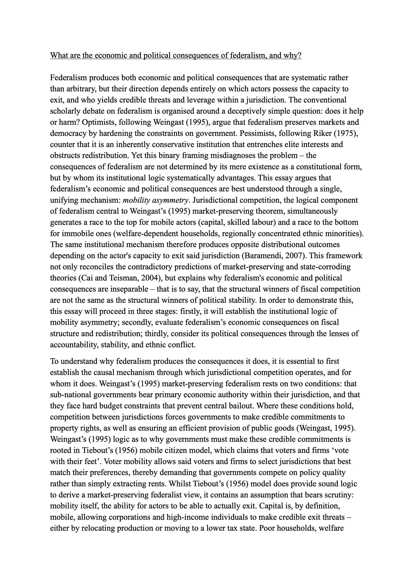
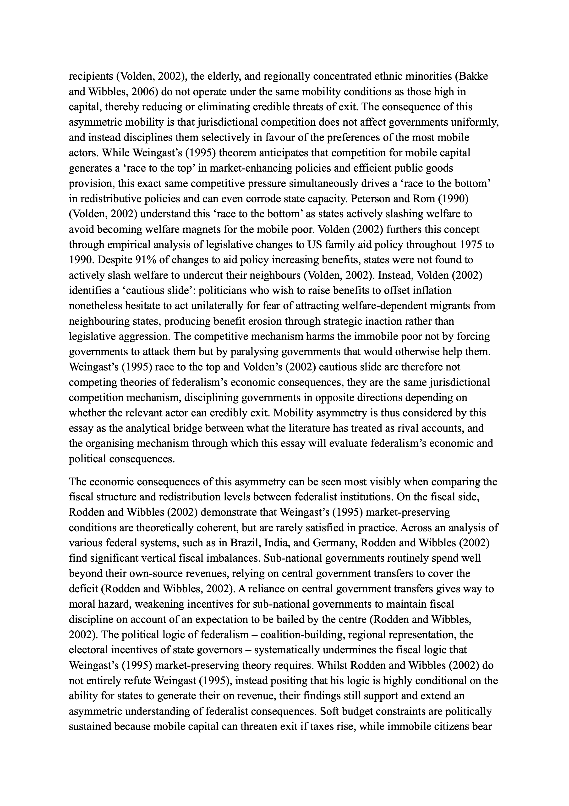
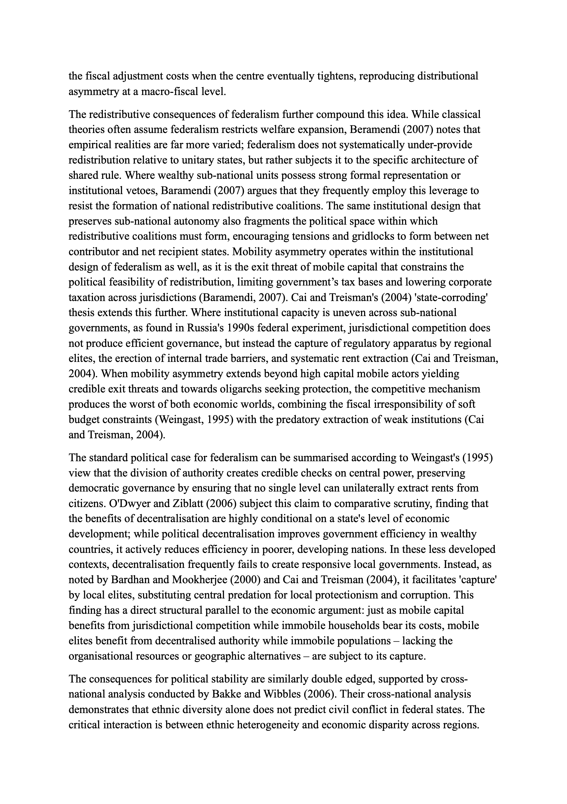
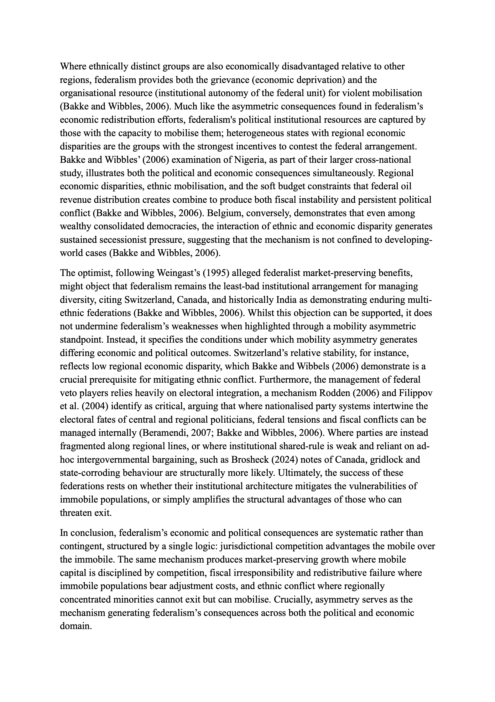
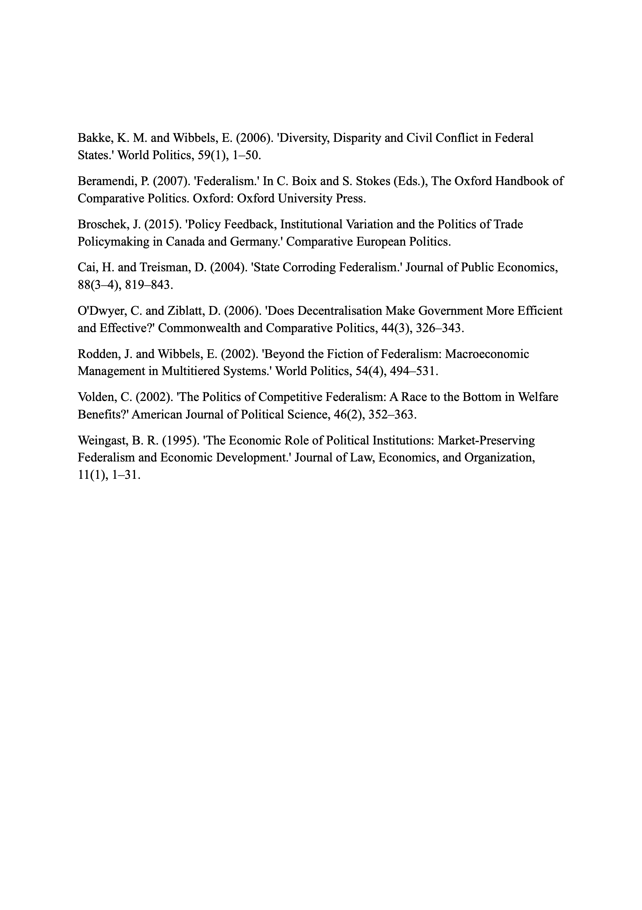

Comparative Government — Tutor: Ceri Fowler
Topics
Essays (marked)
📝 Describe the differences in the legislature's role in presidential and parliamentary systems and analyse the consequences for government policy.


1 / 7
📝 How are citizens and parties linked? Does this vary across countries?


1 / 7
📝 ‘Interest groups are too different from one another and their influence depends on too many different things for scholars to be able to formulate a theory of interest groups.’ Discuss.


1 / 7
📝 Can international actors affect democratisation in a country?


1 / 8
📝 What are the economic and political consequences of federalism, and why?





1 / 5
Past Paper Question Bank
| Topic | Past Paper Questions |
|---|---|
| Democratisation |
Is democratization too overdetermined a phenomenon to have a systematic explanation? What are the most convincing theoretical accounts regarding the role of international factors in democratization? EITHER ‘Each wave of democratization is different from the previous one; thus, it is impossible to develop generalizable theories of democratization.’ Discuss. OR: ‘Explaining democratic transitions is more difficult than explaining the durability of democratic regimes.’ Discuss. Are rich countries more likely to be democracies because they have more rich people? Is democratisation better explained by agentic or structural approaches? ‘Economic development causes transitions to democracy but has no effect on regime survival in countries that are already democratic.’ Discuss. Is democratization caused by the diffusion of ideas or by changes in inequality? Is it possible to make generalisations about the causes of democratisation across different historical eras? To what extent does successful democratization require strong civil society? Is democratisation the result of popular mobilisation or the outcome of long-term structural factors? Has modernisation theory been convincingly refuted as a theory of democratisation? |
| Colonialism |
2017–18: “The impact of colonialism on the economics and politics of developing countries is over-stated.’ Discuss.” 2018–19: “The nature of colonial institutions has an impact on subsequent economic development, but not on anything else.’ Discuss.” 2019–20: “Does the distinction between extractive and inclusive colonial institutions explain why some developing countries have not become richer?” 2021–22: “Does the long-run impact of colonial institutions depend on geography?” 2022–23: “How much does the impact of colonialism on economic and political outcomes depend on pre-colonial factors?” 2023–24: “The effect of historical colonialism on modern outcomes is difficult to assess because of the long passage of time between the onset of colonialism and today.’ Discuss.” |
| Political Parties and Party Systems |
Is there an increasing tendency for parties to converge on the political centre-ground? How can change in party systems best be explained? Do party strategies affect party systems, or the other way around? ‘On average, brokers working for clientelistic parties target gifts and favours to core supporters.’ Discuss. 2024–25: How do party organization features influence the voter linkage strategies pursued by mainstream and challenger political parties? 2022–23: Do presidential democracies cause different models of party competition compared to parliamentary democracies? | Under what conditions are clientelistic linkages between parties and citizens in countries more likely to emerge? | ‘Since parties create electoral systems, we cannot say anything about electoral systems’ independent causal effects on political outcomes.’ Discuss. 2021–22: Do ‘demand-side’ or ‘supply-side’ theories of party competition best explain changes in party systems? | Why do legislators vote against their parties in parliamentary democracies? 2020–21: Do political parties in presidential systems behave differently to political parties in parliamentary systems? | Why do party systems change? 2019–20: ‘The politics within parties is more important than the politics among parties in contemporary democracies.’ Discuss. 2018–19: Does Duverger’s Law adequately capture the effects of electoral systems on party systems? | Have electoral cleavages become less important in shaping party systems? | Do strong parties impede or enhance the effectiveness of legislatures? | What explains why parties engage in vote buying in some political systems but not others? 2017–18: Does international economic integration challenge left-right cleavages in party politics? | Are electoral systems endogenous to party competition? | Does multipartyism exacerbate the vulnerability of presidential democracies? 2016–17: Does the increase in party system fragmentation challenge the cartel party thesis? 2015–16: Who matters more for how parties behave: voters or party elites? | ‘The fact that party systems still reflect past cleavages shows how unresponsive parties are to the electorate.’ Discuss. 2014–15: Do parties influence legislative voting in democracies? | If parties originate in underlying social cleavages, why has the erosion of traditional cleavages in most democracies not resulted in fewer parties? |
| Interest Groups |
2024–25: “The power of an interest group depends greatly on what ‘interest’ the group serves.’ Discuss.” 2023–24: Under what conditions do interest groups matter for political outcomes? 2022–23: Can the logic of collective action explain the formation of the most politically important interest groups? 2020–21: ‘Interest groups are too different from one another and their influence depends on too many different things for scholars to be able to formulate a theory of interest groups.’ Discuss. 2019–20: Why do interest groups vary in their political influence? 2017–18: Is political framing more useful than political opportunity structures in understanding the influence of interest groups? 2016–17: ‘To understand the policy impact of interest groups we need to examine how they interact with the state.’ Discuss. 2015–16: ‘After years of studying interest groups, political scientists still don’t know why they form, what influence they have, or how important they are in the political system.’ Discuss. 2014–15: Does group size influence interest group effectiveness? Why has it proved difficult to formulate general comparative conclusions about interest groups? | To what extent does the literature on the ‘logic of collective action’ explain the distribution of power within and between interests? |
| Legislatures |
Measuring & Classifying Legislative Power: How would we know if a legislature is strong or weak? | What variables should we use when comparing and classifying legislatures? | How can legislative power be convincingly measured and assessed? Legislative Organization & Effectiveness: Why are some legislatures more effective in law-making than others? | In what ways are committees useful for modern legislatures? | What explains variation in the institutional design of modern legislatures? Legislatures & the Executive: Are legislatures in presidential systems superior to parliaments in parliamentary systems when it comes to executive oversight? | Are the differences in the formation and composition of cabinets in presidential and parliamentary regimes the main explanation for the differences in the legislative success of the executives in those regimes? | To what extent do the powers of the legislature shape the effects of presidentialism on political outcomes? | Describe the differences in the legislature’s role in presidential and parliamentary systems and analyse the consequences for government policy. Legislatures & Political Parties: Do parties influence legislative voting in democracies? | Do strong parties impede or enhance the effectiveness of legislatures? | Why do legislators vote against their parties in parliamentary democracies? Legislatures in Different Regime Types: Are parliamentary systems superior to other legislative systems because of more direct delegation from citizens to government? |